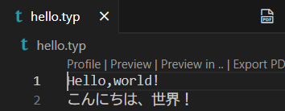
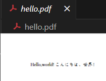
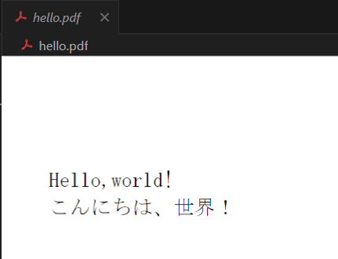

typstという新しい組版ソフトウェアがあります。LaTexというのもありますが、あちらは歴史が長く、その分どの派生の何の関数を使用したらよいかわからなくなったりします。
typstはそのあたりシンプルにできているので、新規にLaTexを学ぶぐらいならtypstの記法に慣れましょう。
typstの導入等は完了しているから、記法だけしりたいよ～という方はこちら。
なお、この記事はwindows使用者が読むことを想定しています。
導入
スタートボタンにcmdと入力すると、コマンドプロンプトが開きます。
コマンドプロンプトで次のコマンドを入力し、実行します。
install --id Typst.Typst
完了したら、インストールされているか確認のためtypst -Vを実行しましょう。
これを書いている時点（20241102）では以下のようにバージョンが表示されます。
C:\Users\might>typst -V
0.11.1 (50115102)
動作確認
では、動作を確認するためにHello Worldを書いていきましょう。
デスクトップに（どこでもよいですが）「hello.typ」というファイルを作りましょう。
vscodeで開き、次のように入力してみましょう。
Hello,world!
こんにちは、世界！
入力できたら、画面右上のPDFと表示されたボタンをクリックしましょう。

右上に小さなボタンがある
押しましたか？ボタンを押すと作成した文章がPDFにコンパイルされ表示します。

PDF化した
ところで、hello.typには2行の文章を書いたはずなのにhello.pdfでは1行になっていますね。
これを回避するには、hello.typで改行を明示する必要があります。改行したい部分に「\」を書いておきます。
また、通常、日本語の文章には明朝体を使用したいことが多いはずです。なので、使用する言語とそのフォントも指定しましょう。
指定するには、文章の冒頭に「#set text(lang:"ja", font: "MS Mincho")」と記載しておきます。
以上をまとめると、hello.typには次のように記述します。
#set text(lang:"ja", font: "MS Mincho")
Hello,world! \
こんにちは、世界！
先程と同様に右上のPDFボタンをクリックし、PDFとして出力します。

hello.pdf
フォントが明朝体になり、きちんと改行されていることが確認できましたか？
終わりに
簡単ではありましたが、以上で紹介を終わります！
typstは生まれたてなので日本語記事が少なく、検索もかけにくいですが、便利なものであるので、使いこなしていきましょう!
また、今回紹介した「#set」などの機能は
このページにまとめています。
レポートを書くのに役立ちそうな機能を中心にまとめていますので、こちらも併せてお読みください！
参考にさせていただいたサイト